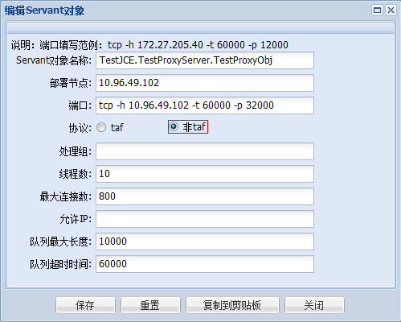

如何使用JCE协议调用TAF框架服务？
使用JCE协议调用TAF框架服务，总体来说有两种方法：
一是：前台组织JCE请求，通过WupProxyServer转发请求，然后WupProxyServer使用TAF标准协议调用真正的后台服务。
二是：前台组织JCE请求，通过HTTP协议调用后台服务。但这个后台服务必须有个Servant是基于第三方协议（HTTP）实现的，然后由这个Servant再调用其他函数。
我们这里主要介绍第二种方式，关于WupProxyServer具体的使用方法请咨询平台开发组。
A1 假设我们服务TestJCE.TestProxyServer，该服务定义了如下功能函数，完成通过传入用户的昵称查找用户的基本资料：
int TestProxyImp::getUserInfo(const string &sUserName, TestJCE::UserInfo & stUser);
A2 我们的目标就是使用Javascript编写JCE协议请求，然后Ajax发送请求调用该函数。JCE协议如下格式：
module TestJCE
{
enum enSex
{
EN_MALE = 2,
EN_FEMALE
};
struct UserBasic
{
0 optional string sUserID;
1 optional string sUserName;
2 optional enSex sex = EN_MALE;
3 optional int iAge;
4 optional string sAddress;
};
struct UserInfo
{
0 optional UserBasic stBasic;
1 optional string sToken;
};
};
A3 后台程序：首先定义基于第三方协议（HTTP）的Servant，前台所有的请求都发送到这里，分解出具体请求命令字之后再调用对应的函数：
int TestProxyImp::doRequest(taf::JceCurrentPtr current, vector<char> & response)
{
current->setResponse(false); //设置不由系统返回，由开发者主动发送返回数据
//HTTP请求解码
const vector<char> & request = current->getRequestBuffer();
taf::TC_HttpRequest httpRequest;
httpRequest.decode(&request[0], request.size());
string sBuff = httpRequest.getContent();
//解码，获取命令字
string sFunc = "";
JceInputStream<> is;
is.setBuffer(sBuff.data(), sBuff.size());
is.read(sFunc, 0, true);
LOG->debug() << "FuncName:" << sFunc << endl;
taf::JceOutputStream<taf::BufferWriter> os;
if (sFunc == "getUserInfo")
{
//获取该命令字下的请求参数
string sName = "";
is.read(sName, 1, true);
LOG->debug() << "getUserInfo::" << TC_Encoder::utf82gbk(sName) << endl; //如果程序使用GBK编码，需要做下编码转换。
TestJCE::UserInfo user;
int ret = getUserInfo(sName, user);
//请求调用完毕，开始使用JCE编码组织返回数据
os.write(ret, 0);
os.write(user, 1);
}
else
{
os.write(-63000, 0); //-63000表示出现了不支持的函数命令字
}
TestProxyImp::doSendResponse(current, os.getBuffer(), os.getLength());
return 0 ;
}
int TestProxyImp::getUserInfo(const string &sUserName, TestJCE::UserInfo & stUser)
{
stUser.stBasic.sUserID = "88885138";
stUser.stBasic.sUserName = TC_Encoder::gbk2utf8(sUserName);
stUser.stBasic.sex = TestJCE::EN_MALE;
stUser.stBasic.iAge = 18;
stUser.stBasic.sAddress = TC_Encoder::gbk2utf8(string("武汉市洪山区珞瑜路727号光谷银座4栋17层"));
stUser.sToken = "XXYYTSKDINNHSYKKSDTSS";
return 200;
}
后台代码编写完成后，我们在TAF管理平台上，将这个Servant作为第三方协议添加到TestJCE.TestProxyServer服务中。如：

A4 前台程序：引入libjce.js、libext.js后使用如下的方法组织JCE请求：
function CBF_succ(data)
{
var is = new Taf.JceInputStream(data);
var rt = is.readInt32(0, true, 0);
var st = is.readStruct(1, true, new TestJCE.UserInfo());
console.log("ST:", st);
}
function CBF_fail()
{
console.log("call fail");
}
function TestCall()
{
var os = new Taf.JceOutputStream();
os.writeString(0, "getUserInfo"); //后台服务程序的命令字
os.writeString(1, "腾讯武汉"); //getUserInfo接口中sUserName参数
Util.ajax(os.getBuffer(), CBF_succ, CBF_fail);
}
特别注意：
第一，发送Ajax请求时一定要调用overrideMimeType设置MIME。按例子中的同样的方法设置即可。
Util.ajax = function (oData, oSuccFunc, oFailFunc)
{
var xmlobj = new XMLHttpRequest();
xmlobj.overrideMimeType('text/plain; charset=x-user-defined');
}
第二，Ajax请求返回后，我们需要将xmlobj.response转换成ArrayBuffer。具体的方法可参考我们提供的例子：
Util.str2ab = function (value)
{
var idx, len = value.length, arr = new Array( len );
for (idx = 0; idx < len; ++idx)
{
arr[ idx ] = value.charCodeAt(idx);
}
return new Uint8Array(arr).buffer;
};